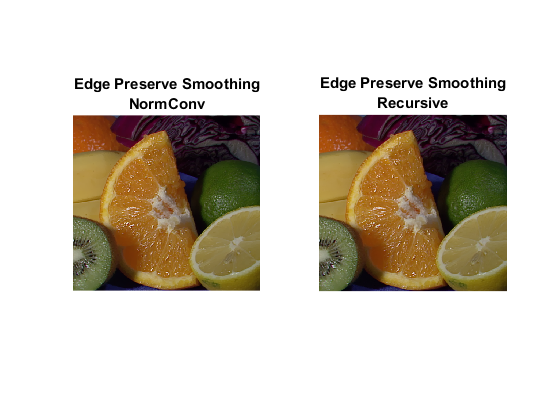
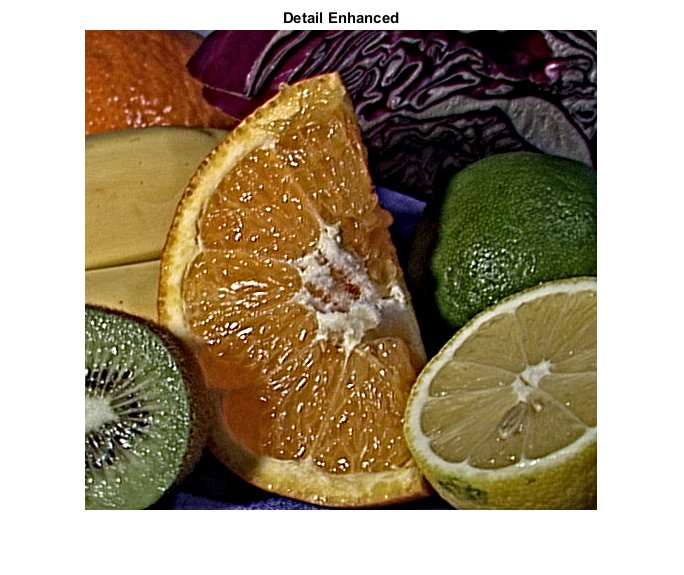
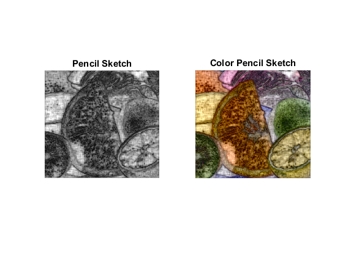
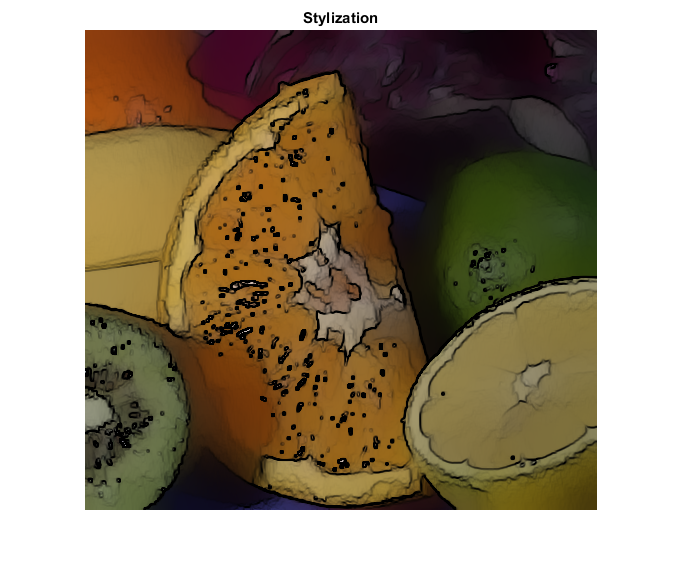

Non-Photorealistic Rendering
This tutorial demonstrates how to use OpenCV Non-Photorealistic Rendering Module:
- Edge Preserve Smoothing - Using Normalized convolution Filter - Using Recursive Filter
- Detail Enhancement
- Pencil sketch/Color Pencil Drawing
- Stylization
Sources:
Contents
Input Image
I = imread(fullfile(mexopencv.root(),'test','fruits.jpg')); opts = {'FlipChannels',true};
Edge Preserve Smoothing
img = cv.edgePreservingFilter(I, 'Filter','NormConv', opts{:}); subplot(121), imshow(img), title({'Edge Preserve Smoothing', 'NormConv'}) img = cv.edgePreservingFilter(I, 'Filter','Recursive', opts{:}); subplot(122), imshow(img), title({'Edge Preserve Smoothing', 'Recursive'})
Detail Enhancement
img = cv.detailEnhance(I, opts{:});
figure
imshow(img), title('Detail Enhanced')Pencil sketch
[img1, img] = cv.pencilSketch(I, ... 'SigmaS',10 , 'SigmaR',0.1, 'ShadeFactor',0.03, opts{:}); figure subplot(121), imshow(img1), title('Pencil Sketch'); subplot(122), imshow(img), title('Color Pencil Sketch');
Stylization
img = cv.stylization(I, opts{:});
figure
imshow(img), title('Stylization')